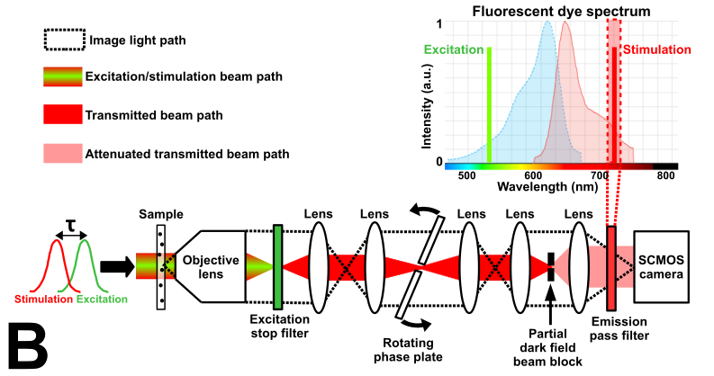
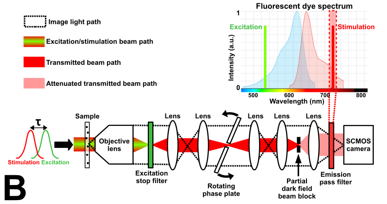

Stimulated Emission Imaging
This project is maintained by Sanjay R. Varma in the York lab, and was funded by Calico Life Sciences LLC
Research Article
Note that this is a limited PDF or print version; animated and interactive figures are disabled. For the full version of this article, please visit one of the following links: https://andrewgyork.github.io/stimulated_emission_imaging https://calico.github.io/stimulated_emission_imaging
Stimulated Emission Imaging
Email: *sanjay@calicolabs.com, †andrew.g.york@gmail.com
Abstract
Stimulated emission is often described as indistinguishable from the stimulating beam, sharing the same phase, frequency, polarization, and direction of travel. What direction does stimulated emission travel when the emitter is pointlike? Pointlike sources typically emit in all directions (a spherical wave), but if the stimulating beam is nearly monodirectional (a plane wave), will the stimulated emission propagate in all directions, or just one? We perform simple experiments to explore this apparent paradox, with an eye towards technological utility. In particular, does stimulated emission encode information about an emitter's location? Can lenses use this stimulated emission to form images of emitter distributions? If so, this suggests a way to combine the high signal rates of transmitted light microscopy with the specificity of fluorescence microscopy.
Peer review status
Pre-print published February 12, 2020 (This article is not yet peer-reviewed)
Cite as: doi:10.5281/zenodo.3665824
Introduction
Fluorescence is a widely-used tool in biological research. Fluorescent dyes and genetically-expressed fluorescent proteins help scientists determine the structure of organelles, track intra-cellular activity, quantify protein expression and distribution, sequence genes, and measure concentration of chemicals.
Fluorescence is the emission of light from an energetically excited material as it spontaneously decays to a lower energy state [Einstein 1917]. For a group of \(N\) fluorophores, the total emission rate is \(n_2N/\tau_{fluor}\), where \(n_2\) is the fraction of the population in the excited state and \(1/\tau_{fluor}\) is the spontaneous emission rate constant [Hell 1994]. The genetically expressed green fluorescent protein (GFP) and the Alexa Fluor 488 dye have \(\tau_{fluor}\) of 4.1 ns and 4.3 ns, respectively. \(\tau_{fluor}\) depends on the environment (e.g. refractive index), but for typical fluorophores used in microscopy, \(\tau_{fluor}\) ranges from 4 ns to 9 ns [Magde 2002, Thorn 2017] and is not easily tuned.
The accuracy of a fluorescence measurement improves as the amount of fluorescent emission increases [Pawley 2006]. What are the limits on fluorescent emission? \(n_2\) is controlled by excitation power, but cannot exceed 1. \(N\) can be increased via over-expression or multiple tagging, but this often causes undesired artifacts in biological samples. Increasing exposure time increases fluorescent signal but degrades time resolution. Therefore, a fixed \(\tau_{fluor}\) represents a practical limit to our ability to resolve fast sub-cellular dynamics, especially when quantifying low-abundance proteins or viewing structures whose function is impaired by excessive fluorescent tagging.
Stimulated emission, an alternative radiative decay process, is the emission of light from an energetically excited material, triggered by light applied to the material [Einstein 1917]. The rate of stimulated emission is \(h_{stim}\sigma_{23}n_2N\), where \(h_{stim}\) is the intensity of the stimulating light and \(\sigma_{23}\) is the cross-section for the optical transition [Hell 1994]. Unlike spontaneous emission, the stimulated emission rate constant \(h_{stim}\sigma_{23}\) is easily tuned over a large range by changing the stimulating light intensity \(h_{stim}\). For example, a stimulation intensity of ~200 mW/µm2 can yield \(h_{stim}\sigma_{23}\) roughly equal to \(1/\tau_{fluor}\) [Willig 2007], while pulsed stimulating light with similar average power (but higher peak power) can yield \(h_{stim}\sigma_{23}\) three orders of magnitude larger than \(1/\tau_{fluor}\) [Dyba 2000].
A fixed spontaneous emission rate constant \(1/\tau_{fluor}\) limits the speed of fluorescent imaging. Given that the stimulated emission rate constant \(h_{stim}\sigma_{23}\) can be orders of magnitude higher, can we use stimulated emission to take images orders of magnitude faster than fluorescence images? Consider the animated thought experiment shown in Figure 1a below.
| Imaging method: |
Imaging method: Dark-field selected, the beam block is opaque and absorbs the stimulating pulse. With Imaging method: Phase contrast... selected, the beam block is partially transmissive, attenuating the stimulating pulse and retarding its phase. Any red light that passes through the first lens and is not absorbed by the beam block will pass through a second lens (black oval, right) toward a multi-pixel detector (camera icon, far right). See the Appendix for details of
animation generation.
In Figure 1a, a pulse of green light energetically excites a point-like fluorescent particle. Next, a pulse of red light stimulates the particle to emit this energy as red light. A small, opaque beam block (black rectangle, center) absorbs the stimulating pulse (Figure 1a with Imaging method: Dark-field selected). Where will the stimulated emission go? Will any of it reach the camera? Will it form an image of the fluorescent object on the camera? More generally, what is the shape in space and time of stimulated emission from an isolated, point-like emitter?
In their 1964 Nobel lectures on stimulated emission, Townes and Prokhorov remarked:
"... [stimulated emission] has the same field distribution and frequency as the stimulating radiation..." [Townes 1964]
"... stimulated emission occurs when an excited atom emits due to interaction with an external field (quantum). Then two quanta are involved: one is the external one, the other is emitted by the atom itself. Those two quanta are indistinguishable, i.e. their frequency and directivity coincide." [Prokhorov 1964]
Half a century later, this is still our understanding of stimulated emission:
"... in this process, called stimulated emission, a photon encountering an excited molecule produces a copy of itself, thus adding another photon of the same colour and propagation direction to the beam." [Hell 2009]
"An atom or molecule in its excited state can be stimulated down to the ground state by an incident light field, resulting in the creation of a new coherent photon identical to those in the original incident field." [Min 2009]
If stimulated emission has the same field distribution as the stimulating radiation, then perhaps the shape of the stimulated emission in space and time is identical to and indistinguishable from that of the stimulating beam, as illustrated in Figure 1b below.
| Imaging method: |
Imaging method: Dark-field selected, the beam block absorbs the amplified stimulation pulse, and no red light reaches the camera. With Imaging method: Phase contrast... selected, the amplified stimulation pulse is attenuated; the second lens collimates this light, which evenly fills the field of view of the camera (indicated by uniform red coloration of the camera icon). See the Appendix for details of
animation generation.In this model, the energy originating from the fluorescent particle is spread evenly over the stimulating pulse (indicated in Figure 1b by a stronger red color). Like the stimulating pulse, the stimulated emission is absorbed by the beam block (Figure 1b with Imaging method: Dark-field selected), and none of it reaches the camera. Even without the beam block, the stimulated emission would not form an image of the fluorescent particle on the camera, because the shape of the stimulated emission does not depend on the location of the particle. In fact, this model predicts that no information about the particle's position is encoded in the stimulated emission. Finally, note that if the field of the stimulating pulse is well-collimated (meaning it has a well-defined direction of propagation, and therefore flat phase fronts with a large lateral extent), then the same will be true of the field of the stimulated emission. It is not obvious how this emitted field obeys causality.
In Figure 1b, when the center of the stimulating pulse contacts the excited fluorescent particle, the top and bottom edges of the stimulating pulse immediately become brighter. How can a point-like source instantaneously generate an electromagnetic field a large distance from its position?
"... an effect observed at the point \(\vec{x}\) at time \(t\) is caused by the action of a source a distance \(R\) away at an earlier or retarded time, \(t'=t-R/c\)." [Jackson 1998]
If stimulated emission occurs during the stimulating pulse duration \(\Delta t\), then the effects of stimulated emission must lie on an expanding spherical shell with outer/inner radius \(c(t \pm \Delta t/2)\), as illustrated in Figure 1c below.
| Imaging method: |
Imaging method: Dark-field selected, the beam block absorbs the stimulation pulse, while some of the stimulated emission travels around the beam block and is imaged by the second lens (black oval, right) onto the camera (indicated by a red spot on the camera icon). With Imaging method: Phase contrast (constructive interference) selected, the stimulation pulse is attenuated and its phase is retarded; the second lens collimates this light, which evenly fills the field of view of the camera. The stimulated emission that travels around the beam block is imaged by the second lens onto the camera and coherently interferes with the attenuated stimulation pulse to form a phase contrast image (indicated by a bright red spot with a dim ring superimposed on a uniform red background on the camera icon). The sign of this interference inverts if Imaging method: Phase contrast (destructive interference) is selected. See the Appendix for details of
animation generation.In this model, the energy originating from the particle propagates spherically outwards. Unlike the stimulating pulse, some of the stimulated emission continues past the beam block and forms an image of the particle on the camera (Figure 1c with Imaging method: Dark-field selected). If we substitute an attenuating beam block for the opaque one (Figure 1c with Imaging method: Phase contrast selected), the attenuated stimulating pulse forms a uniform background on the camera that coherently interferes with the stimulated emission. While this model describes stimulated emission that is causally related to its source, it is not obvious how the spherical stimulated emission can be considered to have the same field distribution
[Townes 1964]
as the collimated stimulating radiation.
The light path depicted in Figure 1c potentially allows faster imaging via stimulated emission; the one in Figure 1b does not. How shall we decide if either model accurately describes the shape in space and time of stimulated emission from an isolated, point-like emitter? Cray and Vahalla theoretically explored a related question by modeling point-like stimulated emitters as classical oscillating dipoles [Cray 1982, Vahala 1993]. This reasonable assumption is consistent with the model in Figure 1c, but to our knowledge, no experimental work has directly tested it.
Min and Dellwig proposed stimulated emission as an improved contrast mechanism compared to fluorescence, and they imaged fluorophores via stimulated emission [Min 2009, Dellwig 2012]. They assumed that stimulated emission is indistinguishable from the stimulating beam (consistent with the model in Figure 1b) and used single-pixel detection to measure the change in intensity of the stimulating beam due to stimulated emission. Unfortunately, such measurements do not reveal the shape of stimulated emission, making it difficult to rule out Figure 1b or 1c.
Gather and Chen used fluorescently labeled cells as the gain medium of an optically excited laser cavity, and imaged the stimulated emission onto a multi-pixel detector [Gather 2011, Chen 2017]. Their stimulating beam shape was determined by a complicated combination of cavity feedback, sample refractive index, and fluorophore distribution. Since they simultaneously measured the stimulating beam and the stimulated emission, but did not separately characterize their shapes, it is similarly difficult to rule out Figure 1b or 1c based on these measurements.
Since we were unable to find existing literature that unambiguously predicts what the detector in Figure 1a would see, we performed the experiment. We imaged stimulated emission from fluorescent polystyrene beads and from nitrogen-vacancy (N-v) centers in nanodiamonds, in a setup similar to the one depicted in Figure 1a. We used phase contrast microscopy (Figure 1a with Imaging method: Phase contrast selected) and dark-field microscopy (Figure 1a with Imaging method: Dark-field selected). Our results are consistent with Figure 1c's prediction, suggesting that stimulated emission from a point-like source propagates spherically and is distinguishable from the stimulation beam.
Experimental design
Figure 2 shows a photograph and schematic of our experimental setup. The sample is illuminated by two vertically polarized continuous wave lasers (532 nm wavelength for excitation and 721 nm for stimulation), each gated to ~1.25 µs pulse duration via acousto-optic modulators. For convenience, we chose to deliver the excitation beam parallel to the stimulation beam, rather than perpendicular as in Figure 1a. The sample is positioned at the stimulation beam waist, and the excitation and stimulation beams illuminate a ~10 µm diameter region of the sample. The peak excitation intensity is ~15 mW/µm2 and the peak stimulation intensity is ~3 mW/µm2.
 

| Imaging method: | |
| Fluorescent sample type: |
{kind=link}
Three lens pairs in the collection path give 750X total magnification, spreading light from a point-like source in the sample plane across ~103 camera pixels, and yielding a single-particle intensity dynamic range greater than 107. The ~10 µm stimulation beam waist is 36 times wider than the ~280 nm lateral resolution of the collection path. The stimulation beam fills ~1/36 of the numerical aperture (NA) of the collection objective lens and illuminates less than 10-3 of the area of the objective's back focal plane, whereas light emitted from a point-like source in the sample plane fills the entire NA and illuminates the entire back focal plane. This minimal spatial overlap allows us to manipulate the stimulation beam at the back focal plane with little effect on emission or scatter from point-like particles in the sample (as in Figure 1c).
The collection objective's back focal plane is inconveniently located inside the collection objective, but the collection path lenses create two accessible images of the back focal plane where we place spatial filters. For dark-field imaging, we use a small chrome disc to block the stimulation beam (Figure 2b with Imaging method: Dark-field... selected). For phase contrast imaging, we use a small chrome annulus to attenuate the stimulation beam, and a drilled glass slide to apply a relative phase shift between the low-NA stimulation beam and high-NA light emitted from point-like sources in the sample (Figure 2b with Imaging method: Phase contrast... selected). Rotating the glass slide adjusts the phase shift, and substituting annuli with different inner diameters adjusts the attenuation. Note that a small amount of the light from point-like sources passes through the hole in the phase plate, giving an approximate (rather than pure) phase shift. However, the amount is quite small (<0.1%) so the approximation is quite good.
A spectral filter immediately after the collection objective blocks the excitation beam. For fluorescence or fluorescence depletion imaging, a band-pass filter stops the stimulation beam and passes roughly half of the fluorescence emission band for crimson dye and nitrogen vacancies and 1/6 of the emission band for orange dye (Figure 2b with Imaging method: Fluorescence... selected). For stimulated emission or scattered light imaging, a narrow band-pass filter stops >99% of the fluorescent light and passes the stimulation beam, scattered light, and stimulated emission (Figure 2b with Imaging method: Dark-field... or Imaging method: Phase contrast... selected).
We used this microscope to image single fluorescent beads dyed either crimson or orange, and single fluorescent nanodiamonds. Like the point-like fluorescent particle in our thought experiment, the beads (~200 nm diameter) and the nanodiamonds (~80 nm diameter) are substantially smaller than the wavelengths of light we use to image them (600-720 nm). We mount the beads in a medium with matched refractive index (~1.6) to minimize scattering; this mimics our thought experiment, which ignores light scattered by the fluorescent particle. The crimson bead fluorescence photobleaches by 50% after ~1600 excitation pulses and 75% after ~55,000 excitation pulses at 950 mW peak power. The orange bead fluorescence photobleaches by 50% after ~1700 excitation pulses and 75% after ~11,000 excitation pulses at 130 mW peak power. This impedes extended acquisitions, but also lets us check our expectation that fluorescence and stimulated emission decrease with photobleaching, unlike scattering. Nanodiamonds don't photobleach, allowing unlimited images of the same particle, but their extremely high refractive index (2.42) prevents index-matching, yielding bright, coherent scattering. Unlike fluorescence, this scatter cannot be spectrally filtered independently from stimulated emission, and unlike the transmitted light background, this scatter's intensity and phase cannot be spatially filtered independently from other high-NA emission from the sample. The scattered light background deviates from our thought experiment, but lets us check our expectation that stimulated emission is coherent with scatter. Finally, we hope that consistent results from very different fluorophores suggest that our observations are general features of stimulated emission, rather than fluorophore-specific artifacts.
Results
Phase contrast imaging tests our thought experiment
We expect stimulated emission (unlike fluorescence) to coherently interfere with the stimulating beam. Phase contrast microscopy of index-matched beads allows us to test that expectation (Figure 2b with Imaging method: Phase contrast imaging of stimulated emission... and Fluorescent sample type: Beads... selected). Because index matching minimizes scattering, this closely resembles our thought experiment (Figure 1a with Imaging method: Phase contrast... selected), where the stimulating beam provides a bright, uniform, coherent background for the stimulated emission to interfere with.
If the model in Figure 1b is accurate, we expect this background to become (slightly) uniformly brighter when the bead is excited, due to stimulated emission. Tuning the angle of the phase plate would not change the camera signal, because the stimulated emission would overlap perfectly with the stimulation beam, which does not contact the plate.
If the model in Figure 1c is accurate, we expect stimulated emission to form an image of the excited bead on the camera, and we expect this image to coherently interfere with the stimulation beam background. Rotating the phase plate would apply a phase shift to the stimulated emission, tuning the magnitude and sign of the interference. Additionally, tuning the amount of scattered light (by slightly mismatching the refractive index of the bead's mounting medium) would allow us to estimate the relative phase between background, scattered, and stimulated light.
We prepared three crimson bead samples using mounting media with refractive index lower than the beads \((\Delta n\approx 0.05)\), the same as the beads \((\Delta n\approx 0)\), and higher than the beads \((\Delta n\approx -0.01)\). For each sample, we rotated the phase plate to fifteen evenly-spaced angles, spanning one complete wavelength of phase shift. At each angle, we took three exposures with different excitation pulse delays, yielding phase contrast images of beads 2.5 µs before excitation, during excitation, and 2.5 µs after excitation. For each exposure, we used 8 full-intensity excitation/stimulation pulse pairs with 1.25 µs pulse duration and 600 µs between consecutive pairs. We expect moderately efficient but highly selective excitation/stimulation; 532 nm is within crimson's excitation spectrum but not its fluorescence spectrum, and vice versa for 721 nm (Figure 2b, upper right panel, with Fluorescent sample type: Beads labeled with crimson dye selected)
[Rittweger 2007].
Phase contrast imaging of stimulated emission appears to form images
Figure 3 shows single-bead images for a phase plate angle that maximizes bead visibility. Each panel in the top row shows a phase contrast image of scattered light from a bead, 2.5 µs before excitation. We expect no stimulated emission at this delay, because the stimulation and excitation pulses don't overlap in time, and the pulse pair repetition time (600 µs) is orders of magnitude larger than the crimson bead excited state lifetime \(\tau_{exc}\) (2.89 ns). Note that the index-matched bead \((\Delta n\approx 0\), middle column\()\) is invisible via phase contrast, but visible via fluorescence (inset image in Figure 5 with Sample type: Crimson fluorescent bead selected). The bottom row "difference images" in Figure 3 each show the change in the corresponding top row image when the excitation and stimulation pulses overlap in time, compared to when they don't.
| Scattered light phase retardation: | (relative to the background light, modulo λ) |
The \(\Delta n\approx 0\) difference image in Figure 3 clearly depicts the bead. If this difference image is due to stimulated emission, it contradicts the model in Figure 1b, and supports Figure 1c as our preferred model. This is suggestive, but certainly not conclusive. To rule out alternative explanations, we must compare Figure 1c's predictions against a wide variety of observations. What else does our model predict, and what other phenomena might explain our observations?
Our difference image signal is coherent with the stimulation beam
Our model predicts that a phase plate can tune the magnitude and sign of interference between the stimulated emission image and the background (Figure 1c with Imaging method: Phase contrast (destructive or constructive) interference selected). Indeed, rotating our phase plate tunes each difference image continuously from negative to positive contrast (Figure 3 with Scattered light phase retardation: (-λ/4 or +λ/4) selected).
Rotating our phase plate also tunes the scattered light images from negative to positive contrast for \(\Delta n\lt 0\) (Figure 3, top right panel), and vice versa for \(\Delta n\gt 0\) (Figure 3, top left panel). The difference images' contrast matches the scattered light images' contrast when \(\Delta n\lt 0\), and is opposite when \(\Delta n\gt 0\). If stimulated emission destructively interferes with scattered light from high-index particles, this observation is consistent with our model. This observation is also consistent with a model where the excitation pulse somehow lowers the refractive index of the beads. The difference image persists when \(\Delta n\approx 0\) (Figure 3, bottom center panel), which rules out a model where the excitation pulse somehow modulates the diameter of the beads without changing their index.
Our difference images require excited fluorophores
Our model predicts that the signal in our difference images will originate from the points in space and time where the stimulating pulse illuminates excited fluorophores. Indeed, we observe that the difference image of each bead vanishes if the stimulation pulse arrives too early or too late, or if the excitation pulse is blocked entirely. Similarly, the fluorescence image of each bead, which shows the location of its excited fluorophores, consistently predicts the location of each bead's difference image.
Our model predicts that our difference images will fade as photobleaching reduces the number of excited fluorophores illuminated by our stimulation pulses. Indeed, we observe that our difference images fade during prolonged excitation (Figure 4 with Measurement type: Phase contrast difference imaging selected, which uses the same conditions as the lower left panel of Figure 3 with Scattered light phase retardation: +λ/4 selected). The 21,000 difference images in this panel exposed the crimson bead to 504,000
full-intensity
excitation pulses.
| Imaging method: | |
| Fluorescent sample type: |
We used fluorescence imaging of another crimson bead in the same sample to confirm that our excitation intensity reduces the number of excited fluorophores via photobleaching. As expected, the fluorescence irreversibly fades during prolonged excitation (Figure 4 with Imaging method: Fluorescence imaging selected). The 15,000 fluorescence images in this panel exposed the crimson bead to 360,000
maximum-intensity
excitation pulses.
Fluorescence images and difference images both fade, which is consistent with our model. This observation is also consistent with a model where the excitation pulse somehow lowers the refractive index of the bead via interaction with unbleached fluorophores. This observation rules out a model where the excitation pulse somehow lowers the refractive index of the polystyrene without absorption by fluorophores.
Our difference images correlate with fluorescence depletion
Our phase contrast images of crimson beads with and without excitation are qualitatively consistent with the model in Figure 1c, which predicts that stimulated emission from excited fluorophores can form images. If we are stimulating emission, we also expect to deplete fluorescence
[Rittweger 2007].
How much emission are we stimulating, and how much fluorescence are we depleting? To quantify, we measured the excited state lifetime via time-correlated single-photon counting, and compared excitation and stimulation rates to the excited state decay rate by measuring fluorescent brightness while varying excitation and stimulation intensity (Figure 2b with Imaging method: Fluorescence depletion imaging selected).
Figure 5 shows fluorescence signal versus excitation power during stimulation (red dots) and an average of before/after stimulation (green dots). We expect fluorescence depletion during stimulation. We expect no depletion when excitation is delivered before/after stimulation, because the stimulation and excitation pulses don't overlap in time, and both the interpulse spacing (2.5 µs) and the pulse pair repetition time (600 µs) are orders of magnitude larger than our fluorophores' nanosecond-scale excited state lifetimes. Indeed, we observe that stimulation reduces fluorescence from the crimson beads used in Figure 3 (Figure 5 with Fluorescent sample type: Bead labeled with crimson dye selected).
| Fit parameter \(R_{fluor}\): | |
| Fluorescent sample type: |
Based on Figure 5's fits, we estimate that at maximum excitation power, our \(\theta=0\) excitation rate is slightly higher than excited state decay (\(h_{exc}\sigma_{01}\approx 1.9(1/\tau_{exc})\), corresponding to \(\overline{n_2}\approx 0.32\)). Maximum stimulation power depletes ~8% of this fluorescence, corresponding to a \(\theta=0\) stimulation rate slightly lower than excited state decay \(\left(h_{stim}\sigma_{23}\approx0.32(1/\tau_{exc})\right)\). This matches our expectation that if we are appreciably stimulating emission in Figures 3 and 4, we are also appreciably depleting fluorescence.
Our difference images aren't photothermal artifacts
Pulses of 721 nm light yield coherent images of otherwise-invisible fluorescent beads when they illuminate excited fluorophores; they also deplete fluorescence. This is consistent with the model in Figure 1c, which attributes these effects to stimulated emission. This is also consistent with a model where each 532 nm pulse somehow lowers the refractive index of the bead via interaction with unbleached absorbers, and the corresponding 721 nm pulse yields an image of this transient index while incidentally (somehow) depleting fluorescence. We're particularly concerned with heating as a potential mechanism for transient refraction [Boccara 1980].
How can we distinguish between these two models? If we reduce our bead's stimulated emission cross-section, we expect less stimulated emission, but identical heating-induced transient refraction. Figure 1c predicts this would reduce our difference image amplitudes, and also reduce depletion. A heating-based model predicts this would not change difference image amplitudes. Substituting orange for crimson dye in our fluorescent beads allows us to test these predictions, by reducing the spontaneous emission cross-section at 721 nm, which implies a lower stimulated emission cross-section
[Rittweger 2007].
This substitution also changes the excitation cross-section, quantum efficiency, and number of fluorophores per bead. In order to cleanly distinguish between the two models, we must be careful to deliver the same heat load to the orange beads as we did to the crimson beads during fluorescence, depletion, and phase contrast measurements (Figure 2b with Fluorescent sample type: ...orange dye selected).
Indeed, orange beads produce substantially smaller phase contrast difference signals than identically heated crimson beads (Figure 4 with Imaging method: ...stimulated emission and Fluorescent sample type: ...orange dye selected). Orange beads also show much less fluorescence depletion than identically stimulated crimson beads, and their fluorescence vs. excitation/stimulation intensity fits a much lower stimulated emission cross-section (Figure 5 with Fluorescent sample type: ...orange dye selected).
Yet again, our results are consistent with the model in Figure 1c, and finally seem to rule out photothermal artifacts. At this point, we genuinely can't think of an alternative model consistent with all our observations, and we're tempted to conclude our imaging contrast is due to stimulated emission. Our primary remaining fear is an "unknown unknown"—some alternative photophysics explains our observations, but we're too ignorant to check for it.
We observe similar results from a vastly different fluorophore
The model in Figure 1c is not fluorophore-specific. Switching samples to a different fluorophore (nitrogen vacancies) in a different substrate (nanodiamonds) mounted in a different medium (microscope immersion oil) allows us to test our expectation that the results in Figures 3 and 4 are not specific to crimson dye, polystyrene beads, or thermoplastic mounting media. Despite these differences, we observed equivalent results in nanodiamonds and beads, as we expected.
We looked for stimulated emission from our nanodiamonds (Figures 2 and 5 with Fluorescent sample type: Nanodiamonds... selected) via dark-field imaging (Figures 1 and 2 with Imaging method: Dark-field... selected). As with beads, the nanodiamond difference images match the location of fluorescence images, vanish if the stimulation pulse is early or late, and correlate with fluorescence depletion (Figure 5 with Fluorescent sample type: Nanodiamonds... selected).
While not conclusive, we find these results reassuring: if our result is an artifact, it's a fairly general one. Finally, we note that our apparent ability to image stimulated emission despite a strong nonuniform scattered background is promising for practical applications.
Discussion
Are our results obvious, or surprising?
Since 2013, we've conducted a continuous informal survey of our peers, asking them to predict the detected signal in Figure 1a's thought experiment. We estimate we've surveyed a hundred optical physicists, primarily specialists in fluorescence microscopy, including several Nobel prize winners. Our colleagues broadly agreed on two details: the question is simple, and the answer is obvious.
Beyond these details, opinions diverged. Roughly half predicted results consistent with Figure 1b, explaining that stimulated emission is indistinguishable from the stimulating beam (often referring to photons and Einstein). Roughly half predicted results consistent with Figure 1c, explaining that pointlike sources emit spherical waves (often referring to electromagnetic fields and Maxwell). These discussions convinced us that the question may be simple and the answer may be obvious, but even to experienced specialists, the correct answer is not obvious.
Was Einstein wrong?
Nearly every colleague whose prediction resembled Figure 1b attributed their prediction to Einstein. These predictions did not match our results. Assuming both Einstein and our results are correct, how can we resolve this apparent paradox? We don't know, but we offer several observations:
-
Einstein's 1917 argument for directional emission is based on momentum conservation:
"...the momentum \(h\nu/c\) is always transferred to the molecule, ...in the case of [stimulated] emission in the opposite direction [of the moving beam]." [Einstein 1917]
This assumes free molecules in a gas, wheras our emitters are firmly tethered. It's not obvious to us that this detail changes Einstein's conclusions, but one should always be careful when extrapolating a proof to a domain where its assumptions do not hold.
-
Quantum electrodynamics typically considers only "transverse" electromagnetic fields for calculations predicting stimulated emission of indistinguishable photons:
"The set of degrees of freedom associated with the transverse field [\(E_{\perp}\)] is usually designated as 'radiation'" [Cohen-Tannoudji 1998]
Note that transverse fields alone are unphysical and do not obey causality:
"...the longitudinal electric field [\(E_{\parallel}\)] instantly responds to a change in the distribution of charge... the transverse field \(E_{\perp}\) also has an instantaneous component which exactly cancels that of \(E_{\parallel}\) ... only the total electric field [\(E_{\perp} + E_{\parallel}\)] has a physical meaning... " [Cohen-Tannoudji 1997]
Perhaps it is not surprising that the indistinguishability-inspired model in Figure 1b seems superluminal. Recall that the model in Figure 1c (which matched our results) was motivated by an appeal to non-superluminal causality.
- There's a subtle but important distinction between the question, "What will the detector in Figure 1a see?", and the question, "Does stimulated emission go the same direction as the stimulating beam?". The first question is answered by a measurement; the second question requires precise definitions of "stimulated emission" and "stimulating beam". Does "the stimulating beam" refer to the collimated laser beam we intended for stimulation, or does it refer only to the region of this beam which contacts our pointlike emitter? Does "stimulated emission" refer to the electromagnetic field revealed in our difference images, or only the subset of these photons accounted for by amplification, rather than scattering from an excited state?
Regardless what Einstein may have said or meant, we cannot imagine a wavelike emission process from a point source that is both directional (like a plane wave) and causal (like a spherical wave).
What else should we expect?
As experimentalists, we value interpretations primarily because they allow us to make predictions, which we test via measurements. We hope you have developed your own interpretation of our question and our results, and we challenge you to use your interpretation to make further predictions. For example, there are many simple but interesting measurements we have not yet reported:
- What would we measure if we detected in a "reflected" rather than "transmitted" geometry?
- How would our measurements change if we used subnanosecond excitation/stimulation pulses, instead of pulse durations which are much longer than our fluorescent lifetimes?
- Similarly, what if we also used subnanosecond time-gated detection?
- Does the polarization of the light causing our difference images follow the fluorophore orientations, or the stimulation beam polarization?
What results does your interpretation predict for these measurements?
Is this any better than fluoresence?
We've shown a fluorophore-specific coherent contrast mechanism that forms multipixel images, like Figure 1c. Regardless how we interpret this signal, is it useful? We expect this contrast will have two important advantages compared to fluorescence: it tolerates background noise sources, and it doesn't saturate.
As discussed in our introduction, faster fluorescent imaging fundamentally yields fewer signal photoelectrons, due to saturation. Unfortunately, faster fluorescent imaging requires more signal photoelectrons, due to increased camera read noise. Cameras with multi-MHz frame rates exist [Millet 2018], but their read noise approaches 100 \(e^{-}\), orders of magnitude worse than the <1 \(e^{-}\) read noise of our (much slower) camera. This yields a fundamentally unfavorable tradeoff between speed and signal-to-noise ratio (SNR), since good SNR in fluorescent images is almost invariably due to low noise rather than high signal.
Consider why phase contrast microscopy [Zernike 1935, Zernike 1942] won a 1953 Nobel prize, even though dark-field microscopy [Siedentopf 1902] already had a 1925 Nobel. Both techniques reveal the same refractive/absorptive inhomogeneities with similar SNR, but the absolute signal levels in phase contrast are much higher due to coherent interference [York 2018]. This interference-based signal amplification means most other sources of noise wash out.
We predict that stimulated emission phase contrast will have the same effect on fluorescence measurements that phase contrast had on dark-field scattering measurements, for the same reasons. This applies to background signals like stray light, but especially to camera read noise, which was completely irrelevant to the SNR of the phase contrast difference images in Figure 3. Stimulated emission contrast also doesn't saturate in the same way as fluorescent contrast: if the stimulation beam depletes the excited fluorophores, you can simply turn up the excitation beam to compensate.
What about photodamage?
In fluorescent measurements, we're used to a constant ratio between the number of input photons, the number of output photons, and the amount of time our fluorophores spend in an excited state. Which of these parameters determines photodamage? The utility of our technique depends sensitively on the answer, because stimulated emission breaks these rules.
If transient excitation of excited fluorophores by the excitation or stimulation beams is a dominant mechanism for photodamage, our technique would do substantially more damage per emitted photon compared to fluorescence. If, on the other hand, collisions between excited fluorophores and (for example) oxygen molecules is a dominant mechanism for photodamage, then stimulated emission would do substantially better, because intense short-pulse excitation/stimulation can yield many photons from a single fluorophore in a single fluorescent lifetime.
What technologies could this enable?
Modern forms of phase contrast microscopy [Jacobsen 2006] give incredible speed and SNR, enough to track single unlabeled motor proteins in vitro [Ortega Arroyo 2014]. However, these techniques lack the specificity required for in vivo use, since they reveal everything that's moving, which is profoundly ambiguous in a living cell. The addition of fluorescent tags and a modulated excitation beam could convert such setups to stimulated emission contrast, yielding a similar but protein-specific measurement.
For another example, flow cytometry devices usually have only microseconds to collect signal. One could imagine replacing the low-noise point detectors typical of fluorescent flow cytometry measurements with high-noise array detectors, and tolerating this detector noise via stimulated emission contrast. Flow cytometry that outputs high-SNR images instead of one-dimensional signals would allow sorting by structural parameters like aggregation, and could help break the Poisson loading limit.
More generally, we speculate that stimulated emission contrast could improve any form of fluorescent measurement where high speed and high SNR are desirable.
Acknowledgements
We thank Maria Ingaramo for excited state lifetime and quantum yield measurements of fluorophores, as well as for helping to develop the process for mounting and index-matching polystyrene beads. We thank Keir Neumann for making the N-v center-doped nanodiamond samples, and we thank Benjamin Cooper, Alfred Millett-Sikking, and our colleagues at Calico Labs for inspiration and helpful discussion.
Appendix
Additional details and discussion can be found in the appendix, which is also referenced via hyperlinks throughout this article.